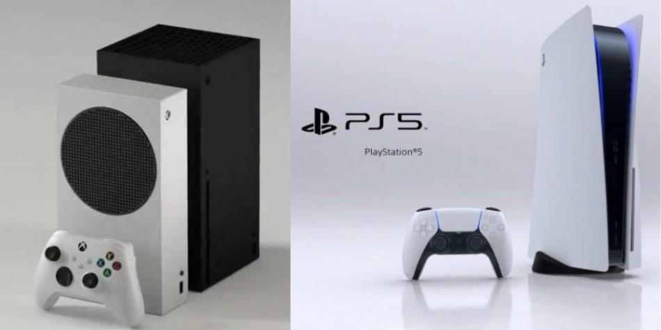

Comienza la nueva guerra de consolas, más pareja que nunca
Con el lanzamiento de las Xbox Series X y Series S y la PlayStation 5 se inicia nueva competencia. ¡La nueva generación de consolas ya está aquí! Después de 7 años del lanzamiento de la Xbox One de Microsoft y la PlayStation 4 de Sony, la guerra de consolas sigue, esta vez con las Xbox Series S y Series X y la PlayStation 5. Según han insinuado estas dos marcas, sus nuevas consolas traerán una revolución en la forma como se juega y una oportunidad enorme para que desarrolladores creen verdaderas obras de arte en esta industria que, conforme a datos de la consultora NewZoo, moverá más de 159.000 millones de dólares en 2020.